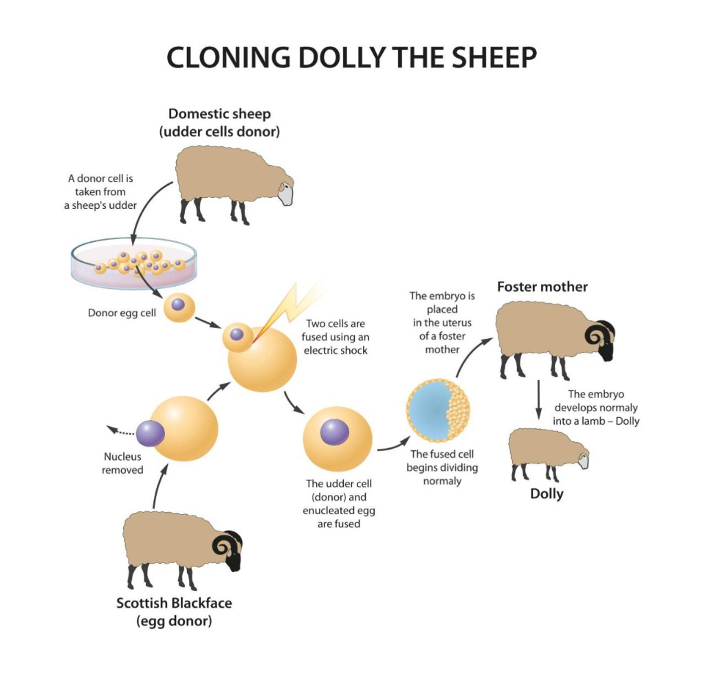
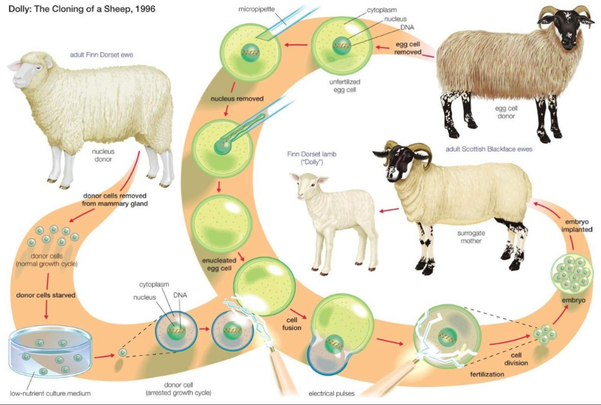
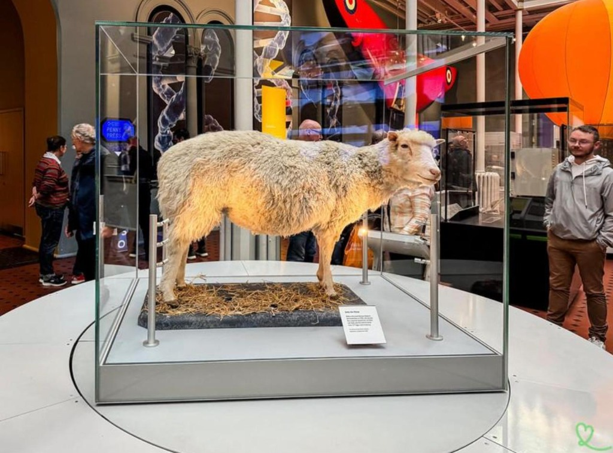

أوّل ثديي يُستنسخ
من خلية بالغة
أنثى خروف من سلالة Finn Dorset، وُلدت في 5 يوليو 1996 في معهد روزلين قرب إدنبرة، اسكتلندا، بالتعاون مع شركة PPL Therapeutics.
ما جعل دوللي تاريخية ليس أنها كانت أول حيوان مستنسخ على الإطلاق، بل أنها كانت أول حيوان ثديي يُنتَج من خلية جسدية مأخوذة من حيوانٍ بالغ. وهذا أثبت أن الخلية المتخصصة لا تزال تحتوي على المعلومات الوراثية اللازمة لتكوين كائنٍ حيٍّ كامل.
— معهد روزلين، إدنبرة، اسكتلندا — 1996
الإنجاز الحقيقي
أثبتت أن نواة الخلية المتخصصة يمكن إعادة برمجتها لتعود إلى حالة جنينية وتُنتج كائنًا حيًا كاملًا.
الإعلان للعالم
أُعلن عن دوللي في فبراير 1997، وأثارت على الفور نقاشًا علميًا وأخلاقيًا عالميًا غير مسبوق.
الأثر العالمي
فتحت أبواب أبحاث الخلايا الجذعية وإعادة برمجة الخلايا والطب التجديدي وأشعلت جدلًا أخلاقيًا مستمرًا.
🏛️ مكان الإنجاز
أُجري البحث في Roslin Institute بالقرب من إدنبرة، اسكتلندا، بالتعاون مع شركة PPL Therapeutics. وكان الهدف الأصلي تطوير حيوانات قادرة على إنتاج بروتينات طبية في حليبها — لا مجرد الاستنساخ لذاته.
من كان وراء دوللي؟
لم يكن العمل من تنفيذ شخص واحد — فريق متكامل من علماء الأحياء وأخصائيي الأجنة والأطباء البيطريين وموظفي رعاية الحيوانات.
السير إيان ويلموت — Ian Wilmut
قائد الفريق العلمي · معهد روزلينقائد المشروع الذي أدى إلى ولادة دوللي. أصبح أحد أشهر العلماء في العالم المرتبطين بأبحاث الاستنساخ. أعلن صراحةً معارضته للاستنساخ الإنجابي البشري، مؤكدًا أن إنجازه العلمي لا ينبغي توظيفه لأغراض غير أخلاقية.
كيث كامبل — Keith Campbell
مطوّر تقنية SCNT · معهد روزلينمن أهم العلماء في تطوير تقنية النقل النووي للخلايا الجسدية (SCNT). كان عمله على إيقاف دورة حياة الخلايا الجسدية (Arrested growth cycle) هو المفتاح التقني الذي أتاح نجاح التجربة للمرة الأولى في التاريخ.
📄 الورقة العلمية المنشورة 1996
نُشرت الورقة العلمية في مجلة Nature باسم:
تقنية SCNT
Somatic Cell Nuclear Transfer — النقل النووي للخلية الجسدية. التقنية التي غيّرت ما نعرفه عن إمكانيات الخلية الحية إلى الأبد.
الخروف المتبرع بالخلية
أُخذت منه خلية جسدية من الغدة اللبنية (الضَّرع). كان من سلالة Finn Dorset وعمره 6 سنوات. هذه الخلية هي مصدر ≈ 99.9% من المادة الوراثية النووية لدوللي.
Finn Dorset — المتبرع النوويالخروف المتبرع بالبويضة
أُخذت منه بويضة غير مخصبة، ثم أُزيلت نواتها بدقة باستخدام ماصّة دقيقة (Micropipette) لتصبح بويضة منزوعة النواة (Enucleated egg).
Scottish Blackface — المتبرعة بالبويضةالأم البديلة
حملت الجنين في رحمها حتى الولادة. وجه دوللي الأبيض — والأم البديلة ذات وجه أسود — أكّد أنها نسخة الخروف المتبرع لا ابنة الأم الحاملة.
Scottish Blackface — الأم الحاملة🖼️ مخططات عملية الاستنساخ الحقيقية

مخطط SCNT المبسّط
يوضح الخطوات الأساسية من أخذ الخلية الجسدية، نزع النواة، الدمج الكهربائي، وصولًا لولادة دوللي.

المخطط الجزيئي التفصيلي — 1996
يُظهر جميع المراحل: Micropipette، إيقاف دورة الخلية، الدمج بالنبضات الكهربائية، زرع الجنين في الأم البديلة.
⚡ مسار SCNT المبسّط
🧬 دقة علمية مهمة — التطابق الوراثي
لا يمكن القول إن دوللي كانت مطابقة وراثيًا بنسبة 100% للخروف المتبرع. فبينما جاء ≈ 99.9% من DNA النواة من Finn Dorset البالغ، فإن DNA الميتوكوندريا جاء من بويضة Scottish Blackface، إذ تتواجد الميتوكوندريا في السيتوبلازم خارج النواة — وهذا الجزء الصغير يُضاف من الخروف الثاني.
خطوات الاستنساخ بالتفصيل
ست خطوات دقيقة أفضت إلى أعظم إنجاز بيولوجي في القرن العشرين — بعد 277 محاولة فاشلة.
🧬 أخذ الخلية الجسدية وتجويعها
أخذ العلماء خلية من الغدة اللبنية (الضَّرع) لخروف Finn Dorset بالغ عمره 6 سنوات. هذه خلية جسدية (Somatic cell) — وليست حيوانًا منويًا أو بويضة. قبل الاستخدام، تم تجويع الخلايا في وسط غذائي منخفض (Low-nutrient culture medium) لإيقاف دورة نموها (Arrested growth cycle)، مما جعلها أكثر قابلية لإعادة البرمجة.
🔵 أخذ البويضة ونزع نواتها
أخذ العلماء بويضة غير مخصبة من خروف Scottish Blackface. باستخدام ماصّة دقيقة جدًا (Micropipette) أزالوا نواة البويضة المحتوية على DNA، فأصبحت بويضة منزوعة النواة (Enucleated egg) — فارغة من مادتها الوراثية الأصلية، جاهزة لاستقبال نواة الخلية الجسدية.
🔗 دمج النواة بالبويضة — Nuclear Transfer
وُضعت نواة الخلية الجسدية (من Finn Dorset البالغ) داخل البويضة منزوعة النواة. فأصبحت الخلية تحتوي على: نواة الخروف البالغ (Finn Dorset) + سيتوبلازم البويضة (Scottish Blackface). وهذا الدمج هو جوهر عملية النقل النووي الذي يُعيد برمجة النواة المتخصصة.
⚡ التنشيط بالنبضات الكهربائية
استُخدمت نبضات كهربائية (Electrical pulses) لتحقيق هدفين: أولًا — دمج الخلية الجسدية مع البويضة (Cell fusion). ثانيًا — تنشيط الخلية الدمج لتبدأ الانقسام وكأنها خلية مخصَّبة (Fertilized egg)، محاكيةً عملية الإخصاب الطبيعية تمامًا.
🌱 نمو الجنين في المختبر
بدأت الخلية بالانقسام تدريجيًا: خلية واحدة ← خلايا متعددة ← جنين مبكر ← مرحلة الكيسة الأريمية (Blastocyst). تمت مراقبة الجنين دقيقًا بدقيق في المختبر حتى وصل إلى مرحلة مناسبة للزرع، ثم نُقل بعناية إلى رحم الأم البديلة (Surrogate mother).
🐑 الحمل والولادة — 5 يوليو 1996
حملت الأم البديلة (Scottish Blackface) الجنين حتى اكتمل نموه طبيعيًا، ووُلدت دوللي في 5 يوليو 1996. وجهها الأبيض المميز — بينما الأم البديلة ذات الوجه الأسود — كان دليلًا فوريًا للعلماء على نجاح التجربة وأنها نسخة من Finn Dorset وليست ابنة الأم الحاملة.
⚠️ تحدي الكفاءة المنخفضة
احتاجت التجربة إلى 277 محاولة للوصول إلى الحمل الناجح الذي أنتج دوللي. معظم الأجنة الناتجة لم تصل إلى ولادة طبيعية. وتشير الدراسات اللاحقة إلى أن الاستنساخ الحيواني يعاني من مشكلات في إعادة البرمجة فوق الجينية (Epigenetic reprogramming) وارتفاع معدلات الخسائر الجنينية.
حياة دوللي وموتها
لم تكن مجرد حيوان تجريبي — عاشت حياة حقيقية وأنجبت نسلًا طبيعيًا.
التكاثر الطبيعي
أنجبت دوللي ستة حملان مع كبش من Welsh Mountain اسمه David. أثبت هذا أن الحيوان المستنسخ يمكنه الوصول إلى النضج الجنسي وإنتاج نسل سليم تمامًا — وهو إنجاز علمي إضافي بحد ذاته.
التيلوميرات والشيخوخة
لاحظ العلماء أن التيلوميرات (Telomeres) — الأجزاء الحامية لنهايات الكروموسومات — كانت أقصر من المتوقع لعمرها. طُرح تساؤل: هل بدأت حياتها بحالة وراثية تشبه خروفًا أكبر سنًا؟ لكن الفحوص لم تُثبت شيخوخة مبكرة عامة.
التهاب المفاصل — 2001
تم تشخيصها بمرض التهاب وخشونة المفاصل (Arthritis) في 2001. أصبحت تمشي بصعوبة واضحة وبدأ علاجها بمضادات الالتهاب للحد من ألمها اليومي.
السرطان الرئوي — 14 فبراير 2003
كشفت الفحوص عن أورام في الرئتين ناجمة عن فيروس Jaagsiekte sheep retrovirus (JSRV). قرر الأطباء إنهاء حياتها بطريقة رحيمة (Euthanasia) في 14 فبراير 2003. كانت في السادسة من عمرها.
⚠️ هل ماتت بسبب الاستنساخ؟
لا توجد أدلة علمية قوية تثبت ذلك. المرض الرئوي الذي أودى بحياتها كان موجودًا في أغنام أخرى داخل المعهد ذاته، ولم يثبت تشريح جثتها ارتباطًا مباشرًا بعملية الاستنساخ. ومع ذلك، أثارت وفاتها المبكرة — والأغنام تعيش 11-12 سنة عادةً — تساؤلات علمية مشروعة حول التأثيرات طويلة الأمد لتقنية SCNT.
لماذا هزّت دوللي عالم العلم؟
قبل دوللي، كان العلماء مقتنعين بأن الخلية المتخصصة مُقيَّدة بوظيفتها إلى الأبد. دوللي كسرت هذا اليقين.
🧪 الاعتقاد السائد قبل دوللي
خلية الجلد → جلد فقط. خلية العضل → عضلة فقط. خلية غدية → نسيج غدي فقط. دوللي أثبتت أن نواة أي خلية — مهما تخصصت — لا تزال تحتوي على المعلومات الجينية الكاملة لتكوين كائن حي كامل ويمكن إعادة برمجتها إلى الحالة الجنينية من جديد.
إعادة برمجة الخلايا
فتحت الباب أمام فهم كيفية إعادة برمجة الخلايا المتخصصة، ما قاد لاحقًا لاكتشاف الخلايا الجذعية المستحثة (iPSCs).
الخلايا الجذعية
أسهمت المعرفة الناتجة مباشرةً في تطوير أبحاث الخلايا الجذعية — ركيزة الطب التجديدي اليوم.
الحيوانات المعدّلة وراثيًا
أتاح تطوير حيوانات تُنتج بروتينات طبية في حليبها، وفتح آفاقًا للعلاج الجيني.
الحفاظ على السلالات
أتاح الاستنساخ إمكانية الحفاظ على سلالات الحيوانات المهددة بالانقراض أو ذات الصفات الاستثنائية.
الطب التجديدي
فُتحت آفاق علاج الأمراض الوراثية وزرع الأعضاء وتجديد الأنسجة التالفة باستخدام خلايا المريض نفسه.
علم الفوق الجينية
كشفت عن آليات Epigenetics وكيف تؤثر البيئة والظروف على التعبير الجيني دون تغيير DNA.
الاستنساخ مقابل التكاثر الجنسي
- نواة خلية جسدية + بويضة منزوعة النواة
- المادة الوراثية النووية من كائن واحد (≈ 99.9%)
- DNA الميتوكوندريا من البويضة المستخدمة
- لا يعني التطابق الكامل بسبب Epigenetics
- كفاءة منخفضة جدًا — 277 محاولة لإنتاج دوللي
- لا تبادل وراثي بين أبوين
- حيوان منوي (الأب) + بويضة (الأم) → إخصاب طبيعي
- الجينوم مزيج من الأبوين — تنوع وراثي عالٍ
- الابن مختلف جينيًا عن كلا الأبوين
- يُنتج صفات جديدة غير موجودة في الأبوين
- الطريقة الطبيعية الأكثر كفاءة وانتشارًا
- يُسهم في التنوع البيولوجي والتطور
⚠️ خطأ شائع يجب تصحيحه
«إذا استُنسخ إنسان فسيكون نفس الشخص تمامًا بنفس الشخصية والذكريات.» — هذا غير صحيح. الاستنساخ يعطي تشابهًا في المادة الوراثية النووية فقط، لكن الشخصية والسلوك تتأثر بـ: البيئة، التغذية، التربية، الخبرات، الظروف، والعوامل فوق الجينية (Epigenetics). النسخة الوراثية ليست نسخة من الشخصية أو الذاكرة أو الحياة.
الجدل الأخلاقي والتشريعي
فتحت دوللي نقاشًا لم ينته حتى اليوم حول حدود تدخل الإنسان في الحياة.
أولًا: هل يجوز صنع نسخة من كائن حي؟
ظهرت مخاوف فورية من تطبيق التقنية على البشر. العلماء المشاركون في إنتاج دوللي أعلنوا صراحةً معارضتهم للاستنساخ الإنجابي البشري. وتقول مؤسسة روزلين إن التقنية يمكن من حيث المبدأ استخدامها على البشر لكنها محظورة قانونيًا وأخلاقيًا.
ثانيًا: معاناة الحيوانات
هل من المقبول أخلاقيًا استخدام مئات الأجنة والحيوانات للوصول إلى حيوان مستنسخ واحد؟ هذا السؤال يُعدّ من أهم القضايا الأخلاقية في البحث الحيوي المعاصر وقضية رفاهية الحيوانات (Animal welfare).
ثالثًا: الإنجابي vs العلاجي
فرق جوهري بين Reproductive cloning (إنتاج مولود كامل — محظور) وTherapeutic cloning (أبحاث الخلايا الجذعية — مرخّص بشروط صارمة). وهذا التمييز هو أساس التشريعات الحديثة.
🇬🇧 الاستجابة التشريعية البريطانية
Human Fertilisation and Embryology Act 1990
قانون مهم أصدرته بريطانيا قبل الإعلان عن دوللي بسنوات. ينظّم استخدام الأجنة البشرية وتقنيات الإخصاب والأبحاث. نصّ على عدم السماح بترخيص استبدال نواة خلية جنينية بنواة خلية أخرى ضمن الحالات المحددة في القانون.
Human Reproductive Cloning Act 2001
ردٌّ تشريعي مباشر على الجدل الذي أثارته دوللي. يحظر صراحةً استخدام تقنيات الاستبدال النووي لإنتاج إنسان مستنسخ. لكن لا يمنع جميع أبحاث الاستنساخ — هناك فرق بين الاستنساخ الإنجابي والعلاجي. أصبحت أحكامه جزءًا من الإطار التشريعي البريطاني الشامل للأجنة والإخصاب.
📌 لماذا كانت هذه القوانين ضرورية؟
لأن التكنولوجيا أصبحت قادرة على التعامل مع قضايا بالغة الحساسية:
ليس كل ما يستطيع العلم فعله تقنيًا يعني أنه يجب استخدامه دون ضوابط. — هذا هو جوهر أخلاقيات العلم الحيوي (Bioethics).
إيجابيات وسلبيات الاستنساخ
✅ الإيجابيات العلمية
- أبحاث الخلايا الجذعية والطب التجديدي
- إنتاج بروتينات طبية في حليب الحيوانات
- الحفاظ على السلالات المهددة بالانقراض
- فهم آليات التخصص وإعادة برمجة الخلايا
- احتمال علاج الأمراض الوراثية مستقبلًا
- تطوير الحيوانات المعدّلة لأغراض طبية
- فتح آفاق علم الفوق الجينية (Epigenetics)
❌ المخاطر والسلبيات
- كفاءة منخفضة جدًا — مئات المحاولات الفاشلة
- خسائر جنينية ضخمة ومشاكل في التطور
- أخطاء في إعادة البرمجة الجينية الفوقية
- بعض الحيوانات المستنسخة تُعاني من اضطرابات
- مخاوف أخلاقية من رفاهية الحيوانات
- إمكانية إساءة استخدام التقنية على البشر
- الحاجة لتراخيص ورقابة مشددة على الأبحاث
لماذا سُمّيت Dolly؟
سُمّيت نسبةً إلى المغنية الأمريكية الشهيرة Dolly Parton — لأن الخلية المستخدمة في الاستنساخ أُخذت من الغدة اللبنية (الضَّرع) للخروف المتبرع. رأى العلماء في الاسم طرفةً ذكية تناسب المناسبة العلمية وتجعل الإنجاز لا يُنسى.
دوللي في المتحف الوطني
بعد وفاتها في فبراير 2003، حُفظ جسم دوللي بعناية فائقة وأُودع في National Museum of Scotland في إدنبرة، اسكتلندا.
لا تزال دوللي معروضة هناك حتى اليوم داخل واجهة زجاجية خاصة — كواحدة من أشهر القطع في تاريخ العلم الحديث، يزورها آلاف الزوار سنويًا من كل أنحاء العالم.
تُجسّد دوللي في المتحف رمزًا للإنجاز العلمي، وللتساؤل الأخلاقي، وللحدّ الفاصل بين ما يستطيع العلم فعله وما ينبغي له فعله.

🏛️ دوللي — National Museum of Scotland، إدنبرة
جسم دوللي المحنّط معروض في واجهة زجاجية منذ وفاتها عام 2003 حتى اليوم.
دوللي لم تكن مجرد «خروف مستنسخ» — كانت برهانًا حيًا على أن كل خلية في جسمنا تحمل في نواتها كل أسرار الحياة ومعلومات لا تنسى. وكانت في الوقت نفسه تساؤلًا عميقًا طرحه العلم على البشرية: ما الذي يجعل الكائن الحي «هو» دون سواه؟
— دوللي، 5 يوليو 1996 — 14 فبراير 2003